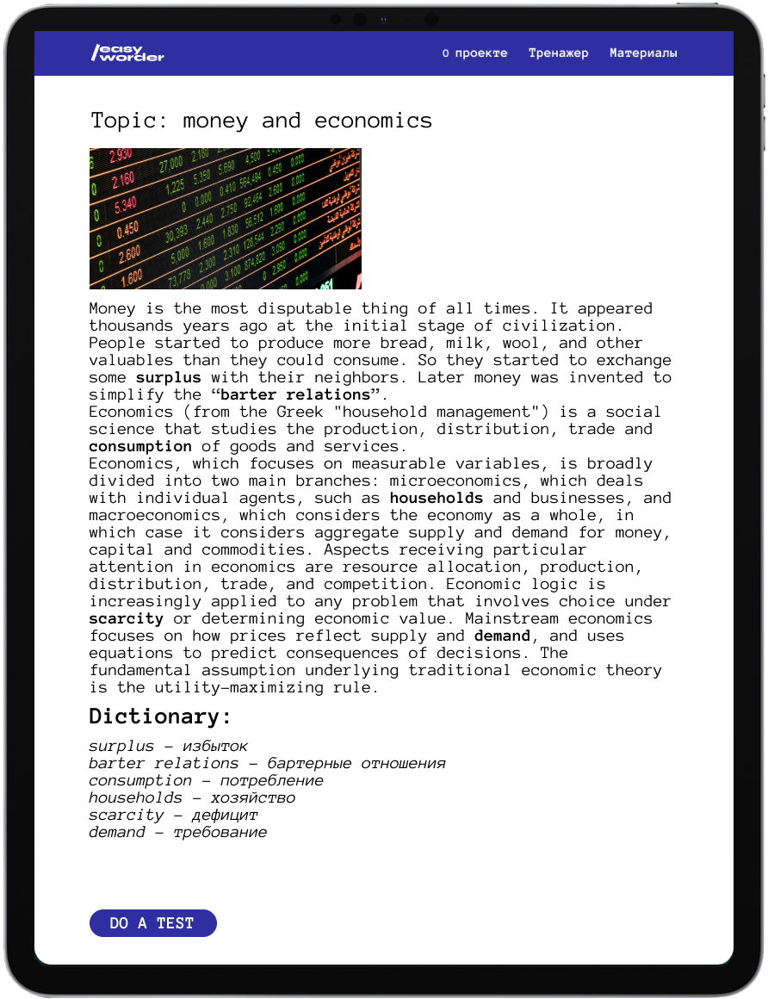

Расширяй свой
словарный запас
уже сегодня!
/easyworder - платформа для комфортного
изучения английского в интерактивном формате.

Функционал
Функционал
платформы
Цель проекта - помочь изучающим английский язык значительно расширить свой словарный запас.
Материал удобно разбит на тематические блоки.
Каждый блок содержит в себе теоретический и практический материал.
Теоретический материал представлен в формате текста с лексическими выражениями на определнную тематику.
Практический материал в свою очередь состоит из интерактивного теста, который помогает закрепить правильное значение и произношение слов.